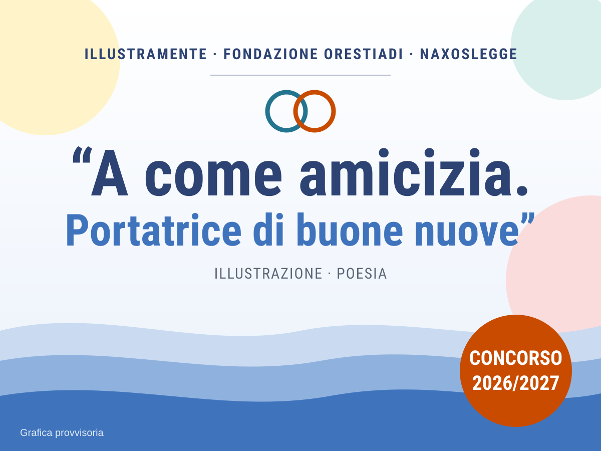

<meta charset="utf-8"><!-- (solo per l’anteprima: lo strumento prepara-contenuti la toglie) -->
<!--
  BANNER PER LA HOME DI ILLUSTRAMENTE
  Da incollare nella home di WordPress, sopra "IllustraNews" o sotto la fascia "Concorso":
  - con Avada Builder: elemento "Code Block";
  - con l'editor a blocchi: blocco "HTML personalizzato".
  Prima di incollarlo, passalo dallo strumento wordpress/prepara-contenuti.html, che sistema
  i tre indirizzi (immagine, "Scopri di più", "Leggi il bando").
  Font: il sito carica già Open Sans e Roboto Condensed, quindi qui non servono.
  Tutte le regole iniziano con .icb: non toccano il resto della pagina.
-->
<section class="icb" aria-label="Concorso Illustramente 2026/2027">
  <style>
    .icb{--icb-navy:#2d4373;--icb-blue:#3f74bd;--icb-orange:#c84b00;--icb-orange-dark:#a63e00;--icb-teal:#22748f;--icb-border:#d9dde3;
      position:relative;overflow:hidden;box-sizing:border-box;max-width:1120px;margin:32px auto;padding:48px 48px 72px;
      border:1px solid var(--icb-border);border-radius:22px;font-family:"Open Sans",Arial,sans-serif;
      display:grid;grid-template-columns:1.1fr .9fr;gap:40px;align-items:center;
      background:
        radial-gradient(circle at 5% 8%,#fff4c9 0 90px,transparent 91px),
        radial-gradient(circle at 94% 6%,#d8efec 0 70px,transparent 71px),
        radial-gradient(circle at 101% 78%,#fbdcdc 0 130px,transparent 131px),
        linear-gradient(180deg,#fff 0%,#eaf1fb 100%)}
    .icb *,.icb *::before,.icb *::after{box-sizing:border-box}
    .icb .icb-wave{position:absolute;left:0;right:0;bottom:-1px;width:100%;height:56px;display:block;pointer-events:none}
    .icb .icb-text-col,.icb .icb-img{position:relative;z-index:1}
    .icb .icb-kicker{font-family:"Roboto Condensed","Arial Narrow",Arial,sans-serif;font-weight:700;text-transform:uppercase;
      letter-spacing:.08em;color:var(--icb-orange);font-size:1rem;line-height:1.4;margin:0 0 12px}
    .icb .icb-title{font-family:"Roboto Condensed","Arial Narrow",Arial,sans-serif;font-weight:700;color:var(--icb-navy);
      font-size:clamp(2rem,4.4vw,3.4rem);line-height:1.12;margin:0 0 .4em;text-transform:none;letter-spacing:normal}
    .icb .icb-title em{font-style:normal;color:var(--icb-blue)}
    .icb .icb-lead{color:#5d6675;font-size:1.05rem;line-height:1.7;margin:0 0 26px;max-width:54ch}
    .icb .icb-actions{display:flex;flex-wrap:wrap;gap:14px}
    .icb .icb-btn{display:inline-block;font-family:"Roboto Condensed","Arial Narrow",Arial,sans-serif;font-weight:700;text-transform:uppercase;
      text-decoration:none;font-size:1.05rem;line-height:1.3;letter-spacing:.02em;padding:.85em 1.6em;border-radius:12px;
      border:2px solid transparent;transition:background .2s,color .2s,transform .15s}
    .icb .icb-btn:hover{transform:translateY(-2px)}
    .icb .icb-btn--primary{background:var(--icb-orange);color:#fff}
    .icb .icb-btn--primary:hover{background:var(--icb-orange-dark);color:#fff}
    .icb .icb-btn--ghost{color:var(--icb-teal);border-color:var(--icb-teal);background:transparent}
    .icb .icb-btn--ghost:hover{background:var(--icb-teal);color:#fff}
    .icb .icb-img{border-radius:22px;overflow:hidden;line-height:0;border:1px solid var(--icb-border);
      box-shadow:0 6px 24px rgba(45,67,115,.18);background:#eaf1fb}
    .icb .icb-img img{width:100%;height:auto;display:block;margin:0}
    @media(max-width:860px){.icb{grid-template-columns:1fr;padding:32px 24px 64px;gap:28px}}
    @media(prefers-reduced-motion:reduce){.icb .icb-btn{transition:none}}
  </style>

  <div class="icb-text-col">
    <p class="icb-kicker">Concorso 2026/2027 · Terza edizione</p>
    <h2 class="icb-title">“A come amicizia.<br>
      <em>Portatrice di buone nuove”</em></h2>
    <p class="icb-lead">Dedicato ai linguaggi espressivi dell’illustrazione e della poesia</p>
    <div class="icb-actions">
      <a class="icb-btn icb-btn--primary" href="index.html">Scopri di più</a>
      <a class="icb-btn icb-btn--ghost" href="bando.html">Leggi il bando</a>
    </div>
  </div>

  <div class="icb-img">
    <!-- Grafica provvisoria: sostituire con la locandina 2026/2027 quando sarà pronta -->
    
  </div>

  <svg class="icb-wave" viewBox="0 0 1440 90" preserveAspectRatio="none" aria-hidden="true">
    <path d="M0,40 C240,90 480,0 720,30 C960,60 1200,95 1440,35 L1440,90 L0,90 Z" fill="#ffffff" />
  </svg>
</section>
